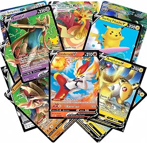

Définition :Le jeu de cartes à collectionner Pokémon (JCC), souvent désigné sous son nom anglais Pokémon Trading card game (TCG) est un jeu de cartes à collectionner de la franchise Pokémon. Ce jeu a fait l'objet de différentes adaptations en jeux vidéo et en mangas et a été porté sous forme d'un jeu en ligne sous le titre de Pokémon Trading card game Online. Concernant les énergies spéciales[Quoi ?], celles-ci ne peuvent pas être utilisées comme des énergies normales, notamment dans le cadre de cartes dresseurs ou objets.
| produit | prix |
|---|---|
 |
prix : 15 £ |